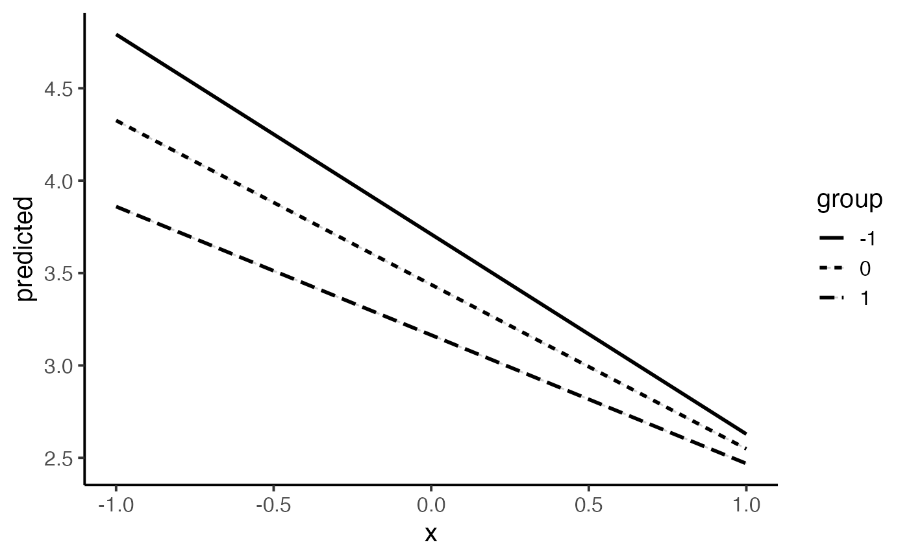
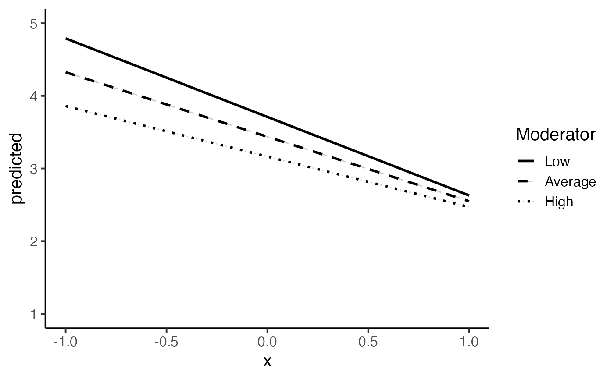
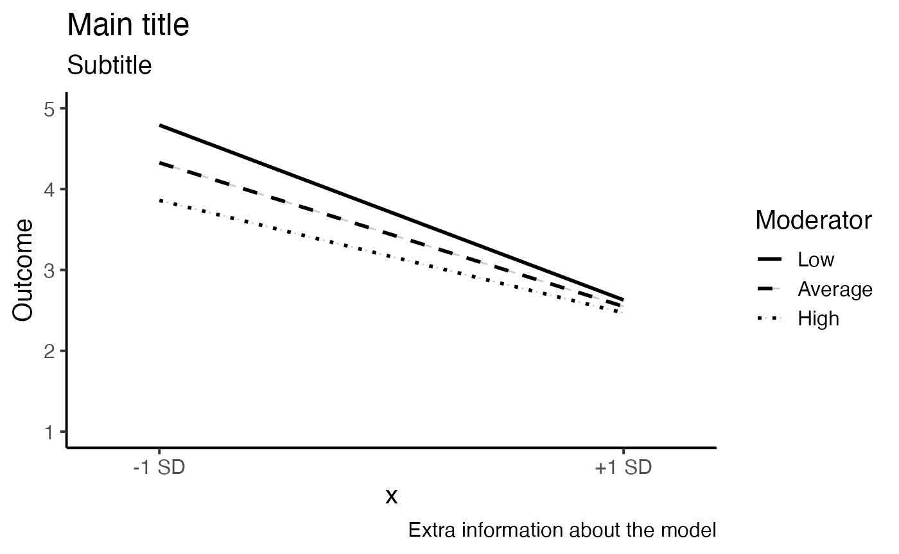
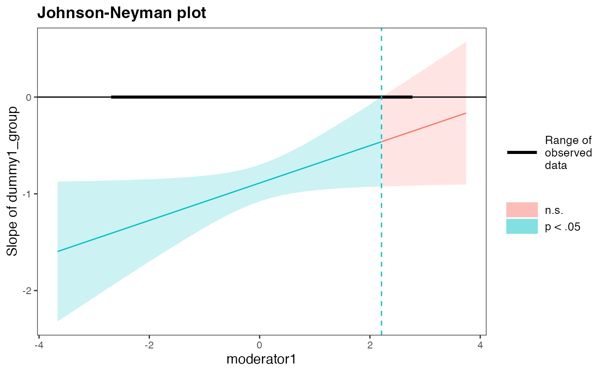
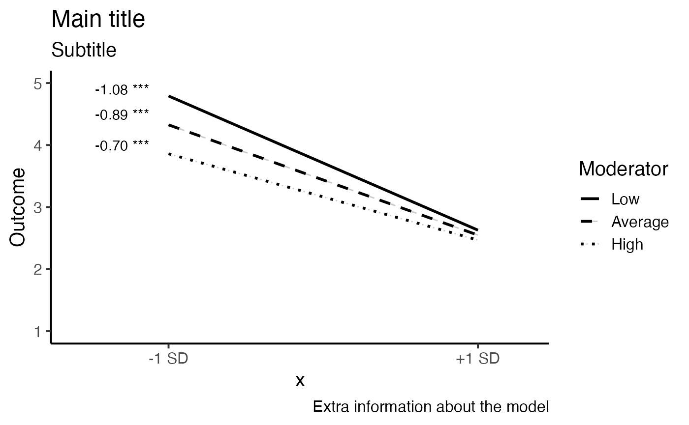

We start from a simple model including:
dummy1_group as a dummy coded group variablemoderator1 as a continuous moderator* to assign their interactionage and gender as covariates that are not
interactingWe standardize the variables that we do include into our interactions. Extra, we make sure their are numeric.
data$dummy1_group <- as.numeric(scale(data$Condition,scale=TRUE))
data$moderator1 <- as.numeric(scale(data$Indecisiveness,scale=TRUE))
# check if the means are zero
summary(data[,c('dummy1_group','moderator1')])## dummy1_group moderator1
## Min. :-0.9214 Min. :-2.6642
## 1st Qu.:-0.9214 1st Qu.:-0.7112
## Median :-0.9214 Median : 0.1150
## Mean : 0.0000 Mean : 0.0000
## 3rd Qu.: 1.0749 3rd Qu.: 0.5657
## Max. : 1.0749 Max. : 2.7440
## NA's :7Here, we build the linear model and check the summary.
model <- lm(outcome ~ dummy1_group*moderator1 + age + gender, data=data)
library(CaviR)
summaRy(model)Predictors |
coefficients |
β |
std. error |
t-value |
p-value |
|
(Intercept) |
2.88 |
0 |
1.07 |
2.69 |
0.01 |
** |
dummy1_group |
-0.89 |
-0.7 |
0.1 |
-9.3 |
0 |
*** |
moderator1 |
-0.27 |
-0.21 |
0.1 |
-2.7 |
0.01 |
** |
age |
0.06 |
0.04 |
0.1 |
0.53 |
0.6 |
|
gender2 |
0.26 |
0.1 |
0.2 |
1.27 |
0.21 |
|
dummy1_group:moderator1 |
0.19 |
0.15 |
0.1 |
2.02 |
0.05 |
* |
ANOVA model: |
||||||
Sumsq |
Meansq |
(df) |
F stat |
Eta sq (p) |
Cohens f |
|
dummy1_group |
69.701 |
69.701 |
1 |
82.008, p = 0 |
0.446 (0.474) |
0.949 |
moderator1 |
4.646 |
4.646 |
1 |
5.466, p = 0.022 |
0.03 (0.057) |
0.245 |
age |
0.471 |
0.471 |
1 |
0.554, p = 0.458 |
0.003 (0.006) |
0.078 |
gender |
0.816 |
0.816 |
1 |
0.96, p = 0.33 |
0.005 (0.01) |
0.103 |
dummy1_group:moderator1 |
3.451 |
3.451 |
1 |
4.06, p = 0.047 |
0.022 (0.043) |
0.211 |
Residuals |
77.343 |
0.85 |
91 |
|||
Info: 97 observations, (7) missing obs. deleted | ||||||
Fit: F(5,91) = 18.61, p = 1.07690753792786e-12 | ||||||
R2= 0.51, Adj. R2 = 0.48 | ||||||
At this point, we are able to build our model and to check our results. However, results might be biased or might be inaccurate by some violated assumptions of your model. To make sure your results can be interpeted, make sure you have checked your assumptions. In the following explanations and important considerations, we refer to the code of plotting the assumptions.
* future plans: Next to the graphics, there are multiple test to check assumptions statistically and remedies to handle violated assumptions. This will be added in the future.
Model assumptions:
Independence: are the errors in my model related to each other?
Influential outliers: are there outliers influential to my model?
Use the CaviR function lm.diagnostics to check these
diagnostics in one line of code
library(performance)
# performance::check_model(model)In this part, you find the code of building a moderation plot.
First, we can extract the predicted values from our model for each level of our variables. These levels are calculated based on the mean and standard deviations for continuous variables and based on the levels for categorical variables.
library(ggeffects)
modeloutput <- ggpredict(model,terms=c('dummy1_group[-1,1]',
'moderator1[meansd]'))
modeloutput <- as.data.frame(modeloutput)
modeloutput## x predicted std.error conf.low conf.high group
## 1 -1 4.791817 0.2032743 4.393406 5.190227 -1
## 2 -1 4.325809 0.1633436 4.005661 4.645956 0
## 3 -1 3.859801 0.2339474 3.401272 4.318329 1
## 4 1 2.628508 0.2019883 2.232619 3.024398 -1
## 5 1 2.548804 0.1774027 2.201101 2.896507 0
## 6 1 2.469100 0.2387795 2.001101 2.937099 1These values are used to build the moderation plot in the
ggplot2 package.
First output:
library(reghelper)
library(ggplot2)
IE_plot1 <- ggplot(data = modeloutput,
aes(x = x, y = predicted, group=group, linetype=group)) +
geom_line(alpha=.2) +
geom_line(aes(x = x, y = predicted),size=1)+
theme_classic(base_size = 15)## Warning: Using `size` aesthetic for lines was deprecated in ggplot2 3.4.0.
## ℹ Please use `linewidth` instead.
IE_plot1
Change both moderated labels and linetypes and the range of the y axis.
library(reghelper)
library(ggplot2)
IE_plot2 <- IE_plot1+
# set range of y axis
ylim(1,5)+
# set titel of moderator legend
# set linetype
# change labels of moderator
scale_linetype_manual("Moderator",
values=c("solid", 'dashed',"dotted"),
labels= c("Low","Average","High"))+
# make sure there are no two legends
guides(colour=FALSE)## Warning: The `<scale>` argument of `guides()` cannot be `FALSE`. Use "none" instead as
## of ggplot2 3.3.4.
IE_plot2
Change all other labels.
IE_plot3 <- IE_plot2 +
# change labels on x axis
scale_x_continuous(breaks=c(-1,1),
labels=c('-1 SD','+1 SD'),
expand = c(0.2, 0))+
# change label of y axis and titles
labs(
title = "Main title",
subtitle = "Subtitle",
caption = "Extra information about the model",
y = 'Outcome')
IE_plot3
library(interactions)
sim_slopes(model,
pred= dummy1_group,
modx= moderator1,
johnson_neyman = TRUE,
centered = "all")## JOHNSON-NEYMAN INTERVAL
##
## When moderator1 is OUTSIDE the interval [2.21, 323.44], the slope of
## dummy1_group is p < .05.
##
## Note: The range of observed values of moderator1 is [-2.66, 2.74]
##
## SIMPLE SLOPES ANALYSIS
##
## Slope of dummy1_group when moderator1 = -1.000000e+00 (- 1 SD):
##
## Est. S.E. t val. p
## ------- ------ -------- ------
## -1.08 0.14 -7.99 0.00
##
## Slope of dummy1_group when moderator1 = 2.601012e-16 (Mean):
##
## Est. S.E. t val. p
## ------- ------ -------- ------
## -0.89 0.10 -9.30 0.00
##
## Slope of dummy1_group when moderator1 = 1.000000e+00 (+ 1 SD):
##
## Est. S.E. t val. p
## ------- ------ -------- ------
## -0.70 0.14 -5.14 0.00
library(interactions)
johnson_neyman(model = model,
pred = dummy1_group,
modx = moderator1,
alpha = 0.05,
line.thickness = 0.5,
title = "Johnson-Neyman plot",
sig.color = "#00BFC4", insig.color = "#F8766D")## JOHNSON-NEYMAN INTERVAL
##
## When moderator1 is OUTSIDE the interval [2.21, 323.44], the slope of
## dummy1_group is p < .05.
##
## Note: The range of observed values of moderator1 is [-2.66, 2.74]
By using the annotate function from the
ggplot2 package, we can add text on the moderation
figure.
IE_plot4 <- IE_plot3 +
# add information about simple slopes to plot
annotate("text", x=-1.3, y=4.0, label="-0.70 ***",fontface =1, color = "black",angle=0)+
annotate("text", x=-1.3, y=4.5, label="-0.89 ***",fontface =1, color = "black",angle=0)+
annotate("text", x=-1.3, y=4.9, label="-1.08 ***",fontface =1, color = "black",angle=0)
IE_plot4